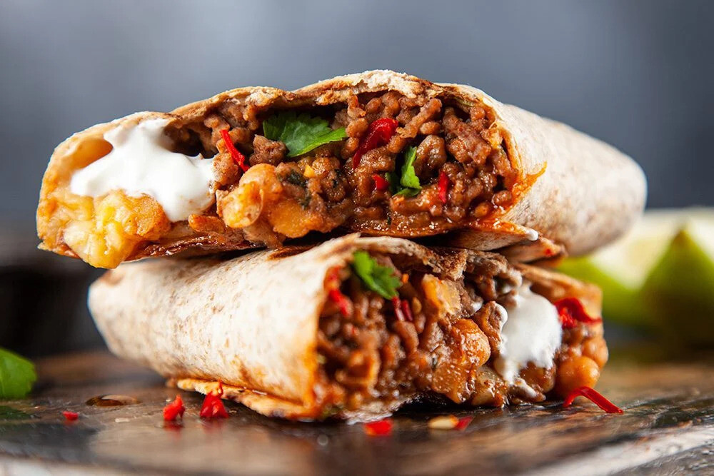

Burritos

Description
This recipe takes the best of fajitas and burritos and combines them for one tasty food fusion!
Ingredients
- 10 ounces skinless, boneless chicken breasts, cut into thin strips
- ½ onion, cut into strips
- 5 ounces multi-colored bell pepper strips
- 2 tablespoons vegetable oil
- ½ lime, juiced
- 2 tablespoons fajita seasoning
- 4 (12 inch) flour tortillas
- 1 cup refried beans, warmed
- ⅔ cup shredded Cheddar cheese
- 1 ½ cups cooked Mexican rice
- ¼ cup sour cream
- ⅓ cup guacamole
Steps
- Place chicken, onion, bell pepper, oil, lime juice, and fajita seasoning in a resealable plastic bag. Seal the bag and squeeze to ensure all ingredients are combined and well-coated; place in the refrigerator to marinate for 2 hours.
- Preheat the oven to 400 degrees F (200 degrees C). Line a sheet pan with foil. Spread fajita mixture onto sheet pan in a single layer.
- Bake in the preheated oven until chicken juices run clear, about 25 minutes. An instant-read thermometer inserted into the chicken strips should read 165 degrees F (74 degrees C).
- Wrap tortillas in a damp paper towel, and warm in the microwave until soft and pliable, about 30 seconds. To assemble burritos, spread 1/4 of each of the refried beans, cheese, rice, fajita mixture, sour cream, and guacamole in a line across the middle of each tortilla.
- Fold opposing sides of the tortilla in, overlapping the filling. Roll the bottom edge up tightly around the filling, then roll the burrito away from you, keeping the sides folded in.